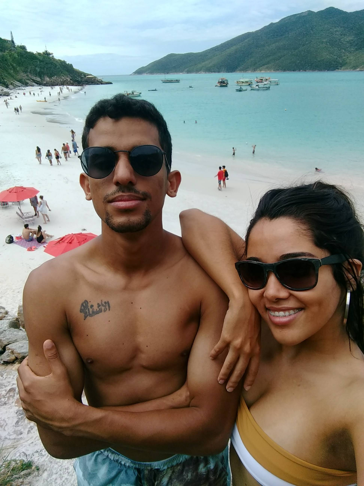

Arraial do Cabo - RJ
Arraial do Cabo reúne algumas das mais belas características do litoral brasileiro, com lagoas e praias de mar cristalino, dunas de areia branca, e vegetação de restinga, além de costões que funcionam como mirante para apreciar tudo isso.
Conhecida como “Capital do Mergulho, Paraíso do Atlântico e o Caribe Fluminense”, venha conhecer a história desse lugar.
Leia mais +

Itacaré - BA
Itacaré pertence à chamada “Costa do Cacau”, limitando-se com os municípios de Maraú, Aurelino Leal, Ubaitaba, Uruçuca, Ilhéus e Oceano Atlântico. Está dentro da faixa de clima tropical, com temperatura média de 27ºC. Possui uma área de aproximadamente 732km² e seu acidente geográfico mais importante é o Rio de Contas.
Leia mais +

Foz do Iguaçu - PR
A exuberante força da natureza nas Cataratas do Iguaçu, a capacidade criativa e a engenhosidade humana na Usina Hidrelétrica de Itaipu, as belezas do Parque das Aves, o pôr do sol no Marco das três fronteiras e muito mais.
Leia mais +